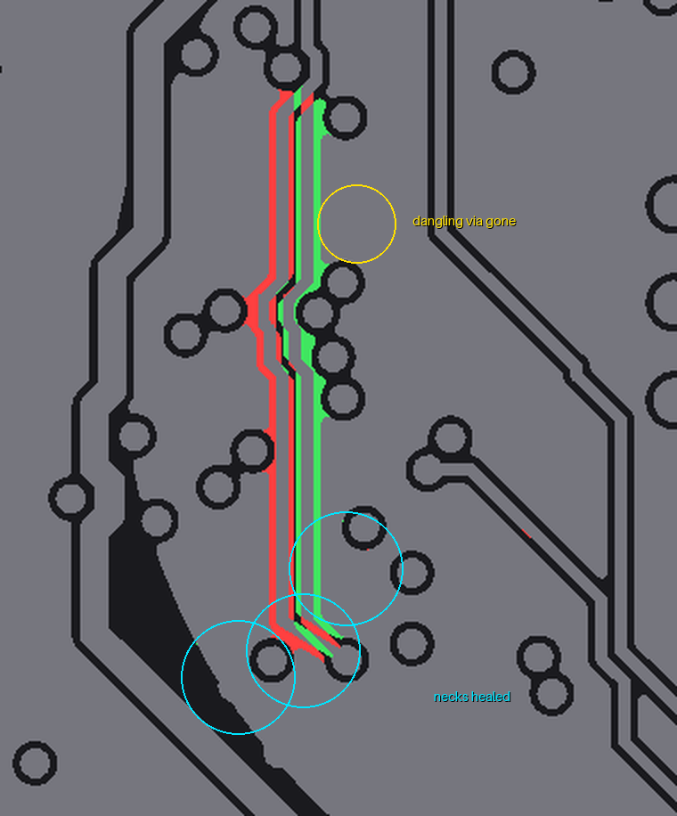
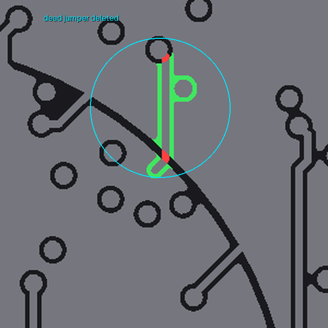
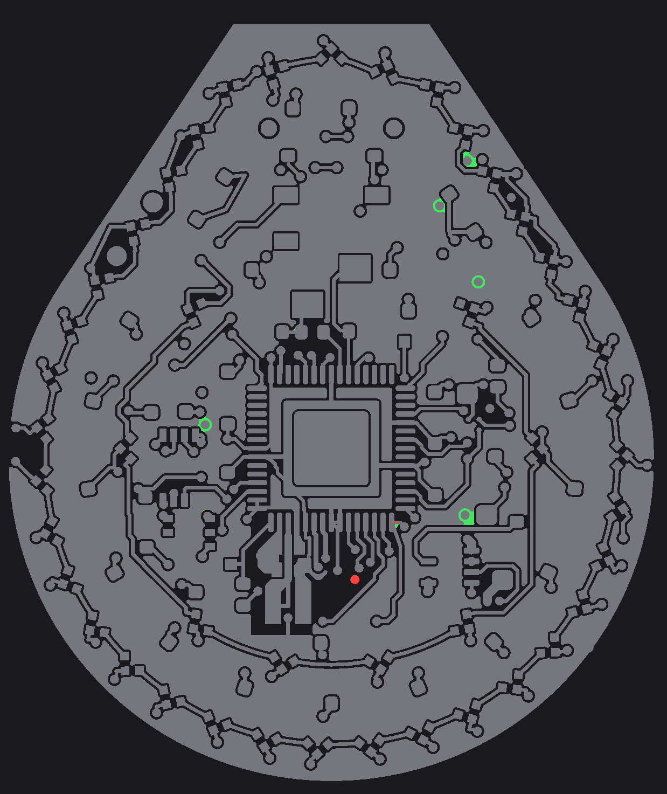
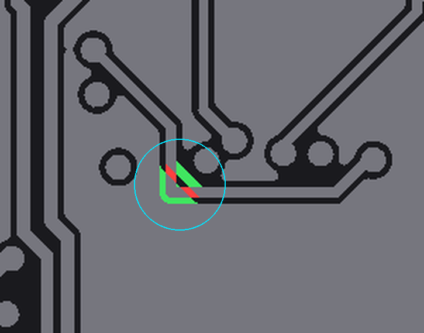
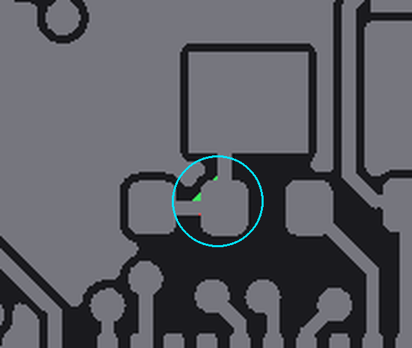
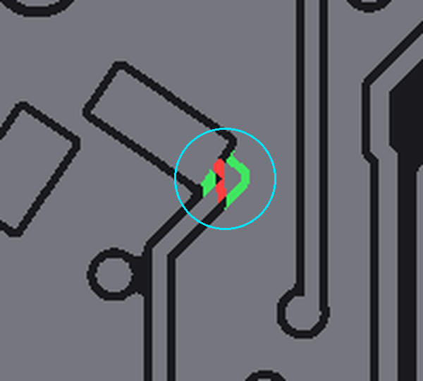
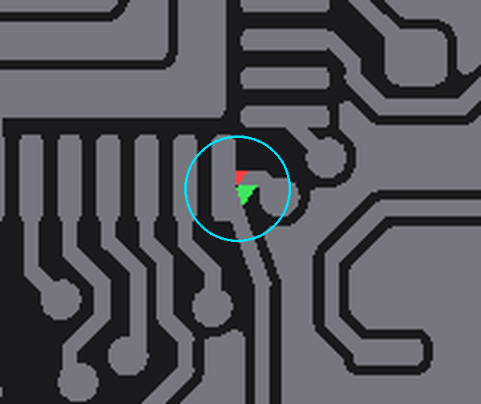
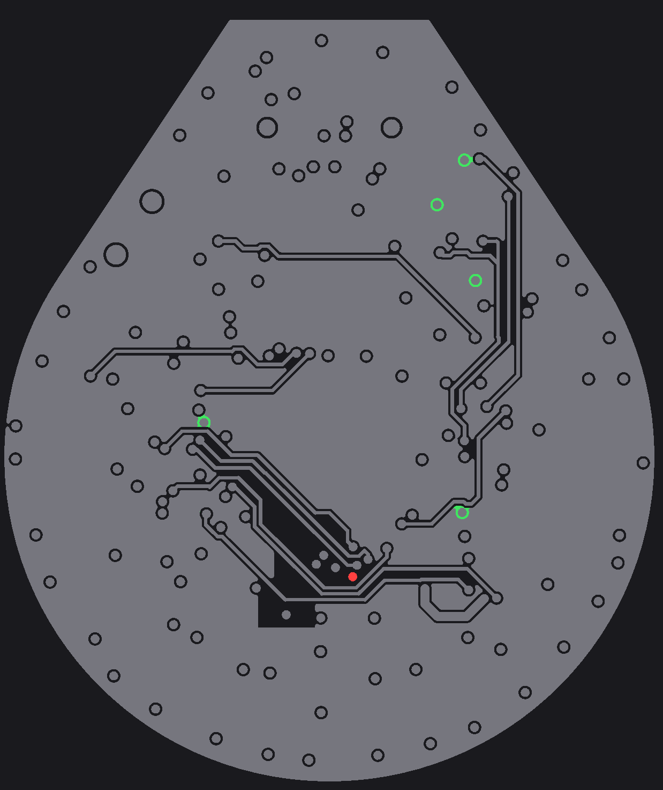
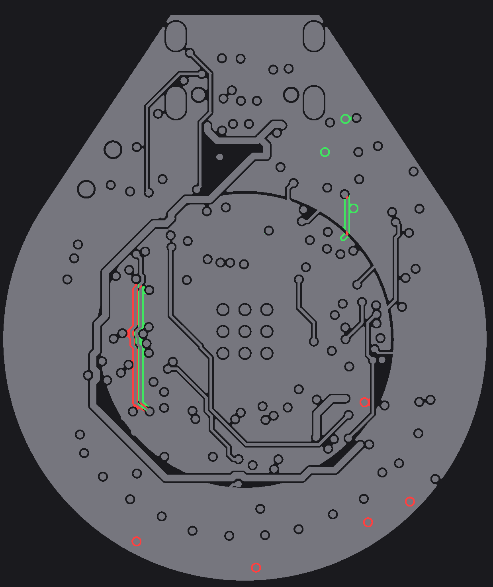
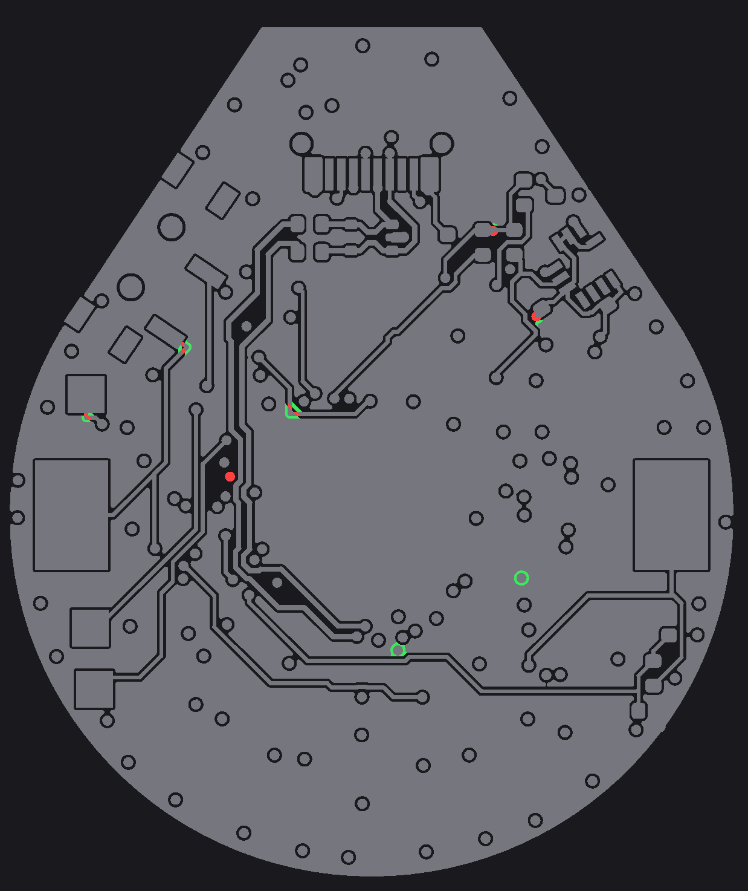

Every P1–P3 item was attempted. Method: each edit was scripted through pcbnew, pre-flighted
against all copper on its layer(s), zones refilled, and gated on
kicad-cli pcb drc — anything that couldn't hold 0 errors / 0 unconnected
was reverted and its blocker recorded below. Final state: 0 DRC errors, 0 unconnected,
and the 7 dangling-item warnings from before are gone (only the pre-existing silk warnings
remain).
Diff images: unchanged copper removed (before only) added (after only) — same 40px/mm registration as the review crops.
| metric | before | after |
|---|---|---|
| DRC errors / unconnected | 0 / 0 | 0 / 0 |
| dangling via / track warnings | 6 / 1 | 0 / 0 |
| 3V3 disc necks < 1.0mm (In2) | 0.10 0.21 0.30 0.30 0.47 0.60 0.67 0.84 0.85 | 0.10† 0.21 0.46‡ 0.60 0.60 0.84 0.85 |
| top pour crescent (59mm²) stitch vias | 2 | 4 |
| bottom pour crescent (51mm²) stitch vias | 1 | 5 |
| hard corners ≥80° on signal nets | 8 | 3 (all pad/via entries) |
| gnd_back necks < 0.6mm | 12 | 10 (VBATT chamfer healed two) |
| VLED annulus necks | 0.49, 0.64 | 0.49, 0.64 (unchanged) |
| total vias | 231 | 232 (+7 GND stitch, −6 dangling 3V3) |
† the 0.10 sliver survives but was downgraded — see corrections. ‡ new 0.46 is a non-load-bearing boundary west of the moved PWR_EN (the feed path no longer goes that way).
PWR_EN's In2 run moved 0.35mm west along its whole straight section — the jog at (93.5,96.2) stays (it dodges a GND via; the first attempt shifted it blindly and shorted — caught and rebuilt as vertical+45). The 0.30 / 0.47 / 0.67mm necks in the LDO→disc chain are now all ≥1.0mm. The dangling 3V3 via at (94.15,98.4) turned out to connect nothing on any layer, so it was deleted rather than re-landed (its antipad was itself part of the pinch). The remaining 0.60mm neck between the VBATT and QSPI_SD2 via antipads at (94.8,102.4) stays: both vias were tried — VBATT's pocket is walled by U3's EP (0.05mm) and U7 pad 4's hole clearance; QSPI_SD2's escape lane runs into the QFN pin ring. With three parallel paths ≥0.85mm now feeding the lobe, I left it.

The In2 GND jumper at (106.3,91–93.6) connected a via to nothing for 2.9mm — deleted, the In2 pour heals over it (KiCad's track_dangling warning gone). All six dangling 3V3 vias deleted. The VBATT tail hiding under the via annulus at (94.2,102.5) deleted.

Seven GND stitching vias added where F pour ∧ In1 plane ∧ B pour all overlap (eroded 0.5mm, spread-maximized, preflighted): top crescent +2, bottom crescent +4, the 3.4mm² island at (108.1,104.2) +1. Two more candidates landed in rule-area keepouts (DRC caught them) and one pinched the VLED annulus to 0.25mm through its In2 antipad — all three removed again; the survivors cost the annulus nothing (still exactly its two pre-existing 0.49/0.64 necks). Pieces 4/5/7 kept their existing stitching — no legal spot with margin appeared inside them.

Five hard corners got 45° chamfers: SWCLK (96.6,95.8) 0.5mm, RUN (88.2,96.0), XTAL_R (98.6,94.1), the VBATT B.Cu spike at (92.4,93.0) (which also healed two back-pour necks), and BOOTSEL (102.8,102.9). Plus two file-hygiene fixes: XIN's 8µm micro-jog merged, XTAL_R's zero-length segment deleted. Signal-net corners ≥80°: 8 → 3, and the three survivors are pad/via entries that belong there.




| item | attempts | blocker |
|---|---|---|
| VBUS In1 hook → reattach the 2mm² In1 fragment (P1-3) | In2, B.Cu, F.Cu | In2: CHRG's diagonal crosses the lane. B.Cu: VBSENSE owns y=107.29 and the GND via pair leaves a 0.70mm gap (needs 1.10). F.Cu: LED43's pads. In1 is the only legal lane — the fragment stays, stitched by its 2 vias. |
| CHRG_DONE loop unwind (P2-5) | direct via spot (108.0,105.9); L-corner via (108.62,105.18) | C16.1 (VBUS input cap) is 0.07 / 0.06mm from both spots; the VBUS In2 diagonal and U2.7's via-in-pad antipad wall the rest. VBATT's In1 line walls the south. The loop is the minimal legal topology for this pocket — freerouting wasn't being dumb. |
| 3V3 0.10mm sliver (P1-2) | SWCLK via SE; VBUS knot north | SE spot: the committed CHRG vias at (95.4,94.2). North: a VLED via at (94.83,92.17) pins the knot at exactly its current y. Also see corrections below — the fix stopped mattering. |
| IMU_SDA S-hook (P2-6) | examined, not edited | Interlocked with the SCL ladder; the In1 wiggle at y=90.45/90.59 exists because a GND via sits exactly 0.425mm away. 400kHz I²C — zero benefit to force it. |
| USB pair gap + flanking stitch vias (P2-7) | automated spot search | No point in the crossing region has GND on F∧In1∧B — it is the channel. Pair gap left as routed (FS USB). |
| VLED annulus necks at (101.8,88.8) (P3-12) | GND via nudge | That via has an attached track (not a lone stitch); the ring provides the parallel path anyway. |
| VBUS scenic route (P3-11) | not attempted | Full reroute through the east moat = large rework crossing the CHRG/CHRG_DONE/VBATT corridor; agreed-low electrical value. |



The dashboard renders (main page) were regenerated
from the fixed board. Everything is committed; git diff 4de8d2e -- out/earring.kicad_pcb
is the authoritative delta, and the pre-fix board is recoverable with
git show 4de8d2e:out/earring.kicad_pcb.